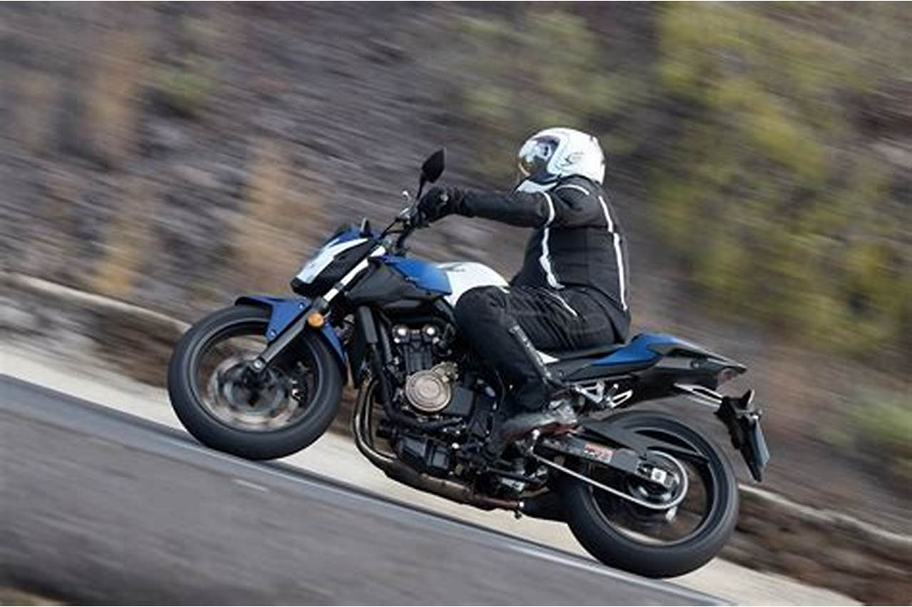

Isai Muños Aviles mi BIOGRAFIA
Naci en un pueblo de taxco de alarcon guerrero
un pueblo magico
Isai muños Aviles yo soy nacido en un pueblo de Taxco de Alarcón un pueblo mágico y de grandes lugares turísticos y con una gran Historia naci el 27 de enero del 2001, estudie en el jardín de niños
“Jardin de niños Tlaloc ” en el centro del pueblo, mi origen son de un pueblo chico pero muy respetuoso y con una gran educación lo malo de los pueblos chicos es que todo se sabe como dicen pueblo chico infierno grande, cuando termine el prescolar entre a la escuela de mi pueblo a los 6 años para ese entonces no sabia leer ni escribir, la escuela se llamaba “Nicolas bravo” siempre estuve en los salones b y se decía que en los salones b no enseñaban bien, que los maestros eran los peores, lo malo es que si lo viví los maestros no eran tan buenos dando clases pero quien es perfecto lo bueno es que recibía educación y eso se valora tu eras el que tenia que echarle ganas, aprendí a leer al 3º año gracias a mi hermano que me apoyo en eso, logre salir de la escuela con un buen promedio, no para estar en la escolta pero si era bueno no me quejo, entre a la secundaria “Josefa Ortiz De Domínguez”, cuando esta apunto de finalizar la secundaria en segundo año logre entrar a la escolta y ser el segundo mejor de toda la institución estuve a una respuesta del examen para ser el primero, pero el segundo es bueno no digo que soy conformista pero no me quejo.
Estudie en la preparatoria fuera de mi pueblo para ser exactos una hora de mi casa a la preparatoria la preparatoria se encuentra en Taxco de Alarcón se llama Preparatoria Autónoma del estado de guerrero “Pablo Neruda No. 4” UAGro tengo buenos recuerdos de la prepa en la, una vez graduado deje pasar un año sabatino.
En ese año me puse a trabajar según para horrar fui un chalan de un albañil por mas de 5 meses y estoy orgulloso de eso también estoy orgulloso de que mi familia es campesina y que cada año consecutivo desde que tengo memoria cultivamos nuestra tierra y producimos nuestro propio maíz y creo que gracias a eso a que se que es trabajar desde las 5 de la madrugada asta las 8 de la noche y trabajar en tu tierra cultivando quebrándote la espalda, la verdad es un dolor insoportable pero recordabas que el trabajo que realizabas era para tu familia y eso te daba fuerzas para levantarte todos los días y salir a trabajar a tu tierra y ver tu cultivo crecer o ver la amanecer en el campo era verdaderamente espectacular o con neblina en los montes cubriendo todo, pareciera que estuvieras en otro planeta y eso me gusta del campo la naturaleza. Creo que tuve una gran familia y un buen lugar para crecer y saber bien cuánto cuesta ganarte tu propia comida con sudor y sangre bueno la sangre no se come pero si sangras te cortas te rompes algo te dejan moretones asta cicatrices pero esa es tu presentación bueno.
El motivo de que este estudiando es que quiero apoyar a mi familia y saber más de la tecnología por que ese va hacer el futuro
Entre a la Utez por que un amigo me dijo de esa universidad lo que no sabia es que en mi grupo que me toco me iba a encontrar con unos buenos amigos y una grande e inigualable amiga que siempre me a apoyado se llama …… para ver su nombre tendrás que esperar la siguiente temporada de mi historia o biografía jajajjajajjajajaja es broma mi querido lector espero que esta información te allá servido de algo sin mas palabras que decir me despido con un fuerte saludo que tenga una bonita y cómoda salida de mi pagina no vemos para la otra.
comidas faboritas
| Comidas faboritas |
agua faborita |
| espagueti |
sandia |
| pechuga enpanisada |
jamaica |
| enchiladas de pollo |
de melon |
| sopes de papa |
naranja |
es uno de mis hovis mas faboritos es el conducir motos a gran velocidad
